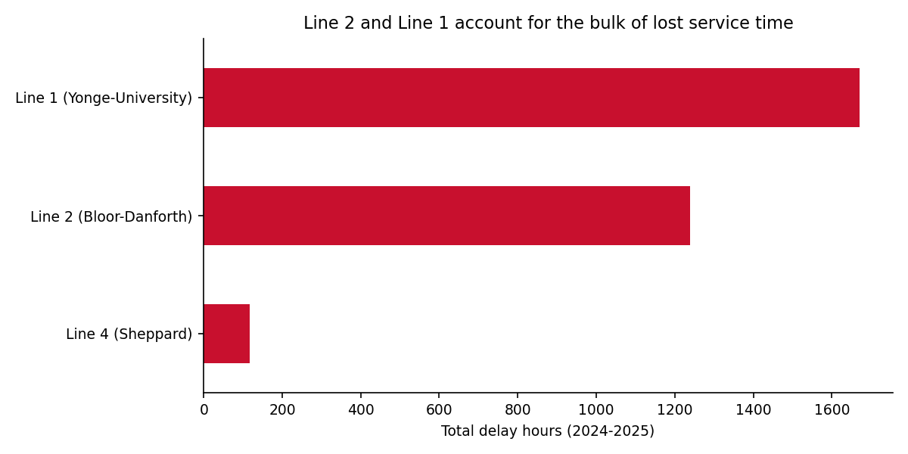
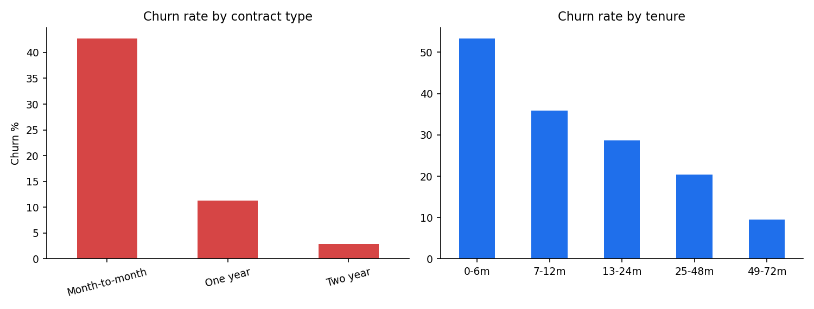

I turn messy datasets into decisions — SQL, Python, Power BI, and Advanced Excel. Currently completing an MSc in Management Analytics at Wilfrid Laurier University (Aug 2026) and consulting for BC Housing on production forecasting. Based in Toronto/Waterloo, seeking Data Analyst and BI Analyst roles in the GTA.
End-to-end analyses on real data — every project includes reproducible code, findings, and a business recommendation.
36-month forecasts of housing completions for every BC regional district, built on 36+ years of CMHC data merged with economic indicators. Pooled Ridge model with leakage-free feature engineering, calibrated 50/80/95% prediction intervals, ±100bp mortgage-rate scenarios, and a Power BI dashboard used by government stakeholders.
64,485 real delay records (2024–2025) cleaned, joined to the TTC's cause-code table, and quantified: 126 days of lost service time, peaks at 8 AM and 4–5 PM, and top causes that are people-related, not mechanical — pointing investment toward platform safety and station staffing.

Normalized a flat retail file into a 4-table schema, then answered real business questions in 7 production-style queries: YoY growth, discount-driven losses (Tables lose $17.7K at 26% avg discount), 12-month cohort retention, and RFM segmentation that found 82 high-value at-risk customers.
Logistic regression on 7,032 telco customers (test AUC 0.837) chosen for interpretability — every coefficient maps to an action. Found $445K of annualized revenue in high-risk accounts and a top-decile targeting lift of 2.5×, translated into a 3-point retention playbook.

Three-sheet workbook with 6 live KPI cards and 4 native Excel charts — monthly revenue trend, category profitability, segment mix, regional sales. Every number is a live formula referencing the data sheet; delivered with zero formula errors and finance-standard formatting.
The toolkit behind the projects above.
SQL (joins, CTEs, window functions), SQLite/PostgreSQL patterns, data modeling & normalization, Python (pandas, NumPy), R
Power BI (DAX, data modeling, scheduled refresh), Tableau, Matplotlib/Seaborn, Excel dashboards, KPI design
Time-series forecasting (Ridge, ARIMAX, XGBoost), regression, classification, cohort & RFM analysis, statistical inference, backtesting
Stakeholder reporting, requirements documentation, gap & cost-benefit analysis, technical-to-business translation, Git/GitHub, Jira, Agile